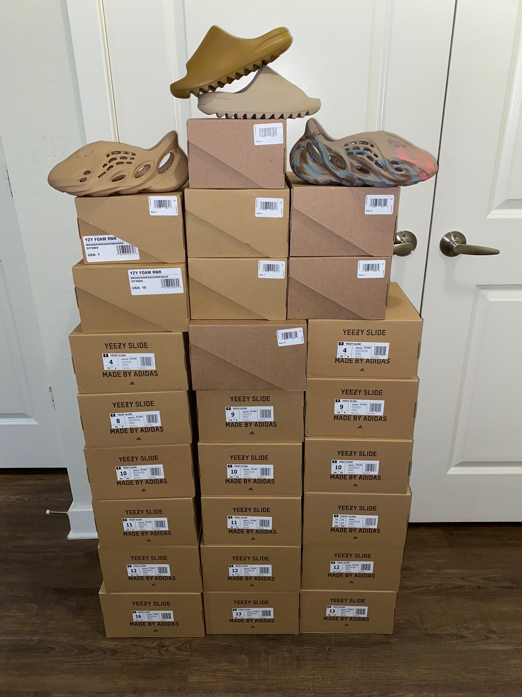
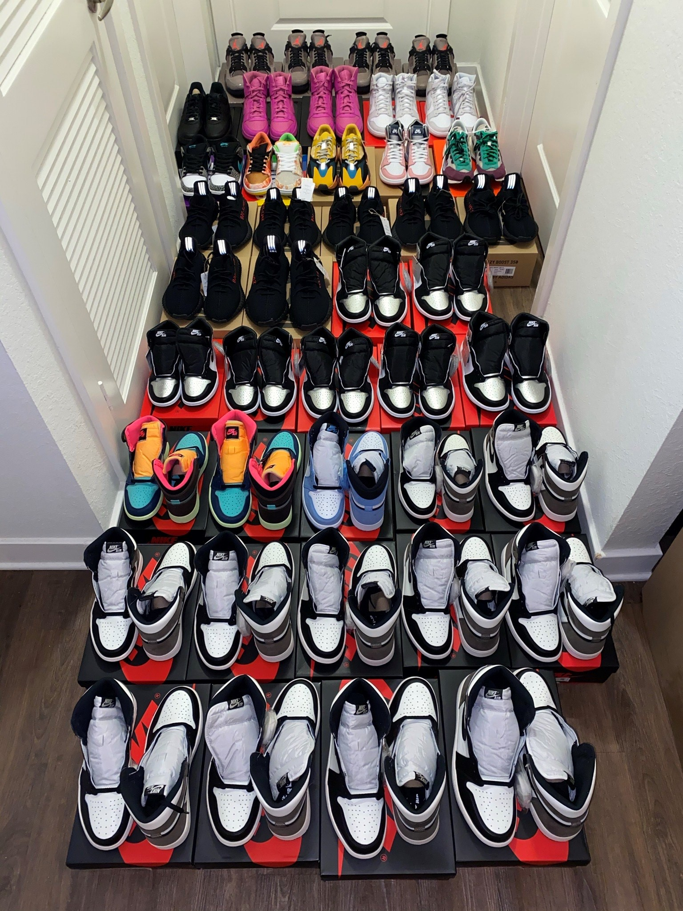

Sneaker Showcase
I am what most people call a "sneakerhead" - someone who loves sneakers and owns a personal collection to also showcase. Below is a collage of my favorite pictures and videos that I've captured to portray my collection. To complement that, you'll also be able to view the various details and colorways of some of the most highly coveted sneakers.
- 
My most recent collection collage which includes a quadruple combination of the adidas Yeezy Slides model in both the "Pure" (pictured middle below) and the "Ochre" (pictured middle above) colorways. Along with the slides are two variations of the adidas Yeezy Foam Runner model in "Ochre" (pictured left) and "MX Sand Grey" (pictured right).
-
This video exhibits one of my favorite shoes of all time, the Nike SB Dunk Low "Street Hawker." I really enjoy capturing videos like this because it shows the true quality and detail of these special sneaker collaborations. These spotlight videos also show the unique craft that it takes to produce such a beautiful sneaker.
- 
This collage shows my biggest collection that I've ever owned at once - a whopping total of 42 pairs of shoes! Included is a plethora of the classic and timeless Jordan 1 Retro High model, which are showing in the bottom half of the photo. The rest of the mix are a fusion of colorways for Yeezy 350 V2, Jordan 4 Retro, and Nike Dunks in both the "High" and "Low" variations.
-
This video presents another classic sneaker model which is the Nike Dunk Low Retro, with this particular sneaker portraying the "UNC" colorway. The "UNC" colorway for all sneaker models stems from the University of North Carolina where one of the all time basketball greats, Michael Jordan, played college basketball. I love the "UNC" colorway because I believe that it's such a clean and crisp colorway for all sneaker models that can enhance any personal outfit.
I hope everyone who has visited this page has enjoyed the personal collection showcase of my limited-release sneakers.